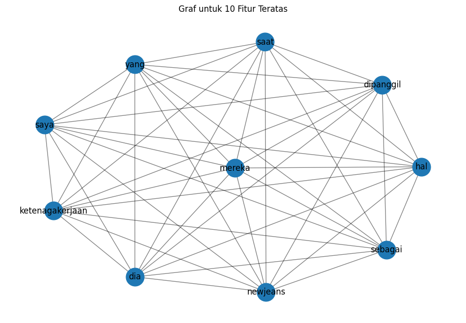

Tugas 5 : keyword extraction#
from google.colab import drive
drive.mount('/content/drive')
Drive already mounted at /content/drive; to attempt to forcibly remount, call drive.mount("/content/drive", force_remount=True).
import pandas as pd
import numpy as np
import re
import nltk
!pip install Sastrawi
nltk.download('punkt')
from nltk.corpus import stopwords
from Sastrawi.Stemmer.StemmerFactory import StemmerFactory
from sklearn.feature_extraction.text import TfidfVectorizer
from sklearn.metrics.pairwise import cosine_similarity
from nltk.tokenize import sent_tokenize
import networkx as nx
import matplotlib.pyplot as plt
Requirement already satisfied: Sastrawi in /usr/local/lib/python3.10/dist-packages (1.0.1)
[nltk_data] Downloading package punkt to /root/nltk_data...
[nltk_data] Package punkt is already up-to-date!
import pandas as pd
df = pd.read_csv("/content/drive/My Drive/ppw/report/tugas-ppw/hasil_prepros.csv")
df.head()
| judul | tanggal | isi | kategori | cleansing | case_folding | tokenize | stopword_removal | |
|---|---|---|---|---|---|---|---|---|
| 0 | Gejala Sifilis pada Wanita Berdasarkan Tahapan... | Rabu, 16 Okt 2024 21:00 WIB | Jakarta - Sifilis atau penyakit raja singa ter... | Kesehatan | Jakarta Sifilis atau penyakit raja singa term... | jakarta sifilis atau penyakit raja singa term... | ['jakarta', 'sifilis', 'atau', 'penyakit', 'ra... | jakarta sifilis penyakit raja singa infeksi me... |
| 1 | Puncak Nafsu Pria Ada di Umur Berapa? Studi Bi... | Rabu, 16 Okt 2024 20:02 WIB | Jakarta - Sebagian orang pasti sudah mengenal ... | Kesehatan | Jakarta Sebagian orang pasti sudah mengenal i... | jakarta sebagian orang pasti sudah mengenal i... | ['jakarta', 'sebagian', 'orang', 'pasti', 'sud... | jakarta orang mengenal istilah puncak seksual ... |
| 2 | Gejala Kanker Mulut yang Kerap Tak Disadari, T... | Rabu, 16 Okt 2024 18:02 WIB | Jakarta - Setiap orang mungkin pernah mengalam... | Kesehatan | Jakarta Setiap orang mungkin pernah mengalami... | jakarta setiap orang mungkin pernah mengalami... | ['jakarta', 'setiap', 'orang', 'mungkin', 'per... | jakarta orang mengalami sariawan luka mulut me... |
| 3 | Kapan Waktu yang Tepat untuk Minum Air Rebusan... | Rabu, 16 Okt 2024 17:31 WIB | Jakarta - Air rebusan serai dikenal sebagai sa... | Kesehatan | Jakarta Air rebusan serai dikenal sebagai sal... | jakarta air rebusan serai dikenal sebagai sal... | ['jakarta', 'air', 'rebusan', 'serai', 'dikena... | jakarta air rebusan serai dikenal salah ramuan... |
| 4 | Viral Hanni NewJeans Bicara soal Bullying di T... | Rabu, 16 Okt 2024 16:34 WIB | Jakarta - Viral momen member NewJeans, Hanni, ... | Kesehatan | Jakarta Viral momen member NewJeans Hanni ber... | jakarta viral momen member newjeans hanni ber... | ['jakarta', 'viral', 'momen', 'member', 'newje... | jakarta viral momen member newjeans hanni berb... |
# Mengambil satu sample berita
sample_berita = df['case_folding'].iloc[4]
sample_berita_list = [sample_berita]
print(sample_berita_list)
['jakarta viral momen member newjeans hanni berbicara tentang perundungan di tempat kerjanya pengakuan itu bahkan membuat dia menitikkan air mata saat dipersidangan pada oktober komite lingkungan hidup dan ketenagakerjaan majelis nasional korea selatan mengadakan audit parlemen yang menargetkan dewan ekonomi sosial dan ketenagakerjaan di bawah kantor kepresidenan dan organisasi afiliasi kementerian ketenagakerjaan dan ketenagakerjaan hanni dipanggil sebagai referensi dan kim jooyoung ceo ador dan chief human resources officer chro hybe dipanggil sebagai saksi sidang tersebut berfokus pada perundungan dan pelecehan di tempat kerja terhadap idol kpop menjadikan hanni sebagai idola kpop pertama yang menghadiri audit parlemen diberitakan all kpop kasus perundungan itu diceritakan hanni newjeans saat mengadakan siaran langsung bersama personelnya pada september gadis berusia tahun itu menceritakan bagaimana manajer dari grup kpop jebolan hybe lain yang telah memerintahkan personel mereka untuk mengabaikan hanni ketika mereka bertemu di dekat ruang rias gedung hybe saya tidak mengerti mengapa hal ini harus terjadi pada saya namun masalah ini bukan kejadian satu kali jika saya tidak melapor hal ini akan diabaikan begitu saja dan siapa pun bisa menghadapi hal seperti ini saya melapor karena saya tidak ingin orang lain mengalami hal ini kata dia hanni juga membagikan contoh lain untuk mendukung klaimnya bahwa dirinya pernah dibully di hybe ia menyatakan tak pernah mendapatkan respons yang baik dari petinggi hybe selama dia menjadi member newjeans ada getaran tertentu rasa tidak hormat yang saya rasakan di dalam perusahaan ia menambahkan bahwa insiden tersebut membuatnya menyadari bahwa ini bukan hanya perasaan sejujurnya saya yakin bahwa perusahaan membenci kami knakna']
import networkx as nx
from sklearn.feature_extraction.text import TfidfVectorizer
# Inisialisasi TfidfVectorizer tanpa batasan jumlah fitur
vectorizer = TfidfVectorizer()
# Fit dan transform teks ke dalam TF-IDF
tfidf_matrix = vectorizer.fit_transform(sample_berita_list)
# Konversi TF-IDF matrix ke DataFrame
tfidf_df = pd.DataFrame(tfidf_matrix.toarray(), columns=vectorizer.get_feature_names_out())
tfidf_df.head()
| ada | ador | afiliasi | air | akan | all | audit | bagaimana | bahkan | bahwa | ... | tentang | terhadap | terjadi | tersebut | tertentu | tidak | untuk | viral | yakin | yang | |
|---|---|---|---|---|---|---|---|---|---|---|---|---|---|---|---|---|---|---|---|---|---|
| 0 | 0.040129 | 0.040129 | 0.040129 | 0.040129 | 0.040129 | 0.040129 | 0.080257 | 0.040129 | 0.040129 | 0.160514 | ... | 0.040129 | 0.040129 | 0.040129 | 0.080257 | 0.040129 | 0.160514 | 0.080257 | 0.040129 | 0.040129 | 0.200643 |
1 rows × 171 columns
cosine_sim = cosine_similarity(tfidf_matrix.T)
# Mengonversi hasil cosine similarity menjadi DataFrame
feature_names = vectorizer.get_feature_names_out()
df_cosine_sim = pd.DataFrame(cosine_sim, index=feature_names, columns=feature_names)
# Menampilkan hasil cosine similarity antar kata
df_cosine_sim
| ada | ador | afiliasi | air | akan | all | audit | bagaimana | bahkan | bahwa | ... | tentang | terhadap | terjadi | tersebut | tertentu | tidak | untuk | viral | yakin | yang | |
|---|---|---|---|---|---|---|---|---|---|---|---|---|---|---|---|---|---|---|---|---|---|
| ada | 1.0 | 1.0 | 1.0 | 1.0 | 1.0 | 1.0 | 1.0 | 1.0 | 1.0 | 1.0 | ... | 1.0 | 1.0 | 1.0 | 1.0 | 1.0 | 1.0 | 1.0 | 1.0 | 1.0 | 1.0 |
| ador | 1.0 | 1.0 | 1.0 | 1.0 | 1.0 | 1.0 | 1.0 | 1.0 | 1.0 | 1.0 | ... | 1.0 | 1.0 | 1.0 | 1.0 | 1.0 | 1.0 | 1.0 | 1.0 | 1.0 | 1.0 |
| afiliasi | 1.0 | 1.0 | 1.0 | 1.0 | 1.0 | 1.0 | 1.0 | 1.0 | 1.0 | 1.0 | ... | 1.0 | 1.0 | 1.0 | 1.0 | 1.0 | 1.0 | 1.0 | 1.0 | 1.0 | 1.0 |
| air | 1.0 | 1.0 | 1.0 | 1.0 | 1.0 | 1.0 | 1.0 | 1.0 | 1.0 | 1.0 | ... | 1.0 | 1.0 | 1.0 | 1.0 | 1.0 | 1.0 | 1.0 | 1.0 | 1.0 | 1.0 |
| akan | 1.0 | 1.0 | 1.0 | 1.0 | 1.0 | 1.0 | 1.0 | 1.0 | 1.0 | 1.0 | ... | 1.0 | 1.0 | 1.0 | 1.0 | 1.0 | 1.0 | 1.0 | 1.0 | 1.0 | 1.0 |
| ... | ... | ... | ... | ... | ... | ... | ... | ... | ... | ... | ... | ... | ... | ... | ... | ... | ... | ... | ... | ... | ... |
| tidak | 1.0 | 1.0 | 1.0 | 1.0 | 1.0 | 1.0 | 1.0 | 1.0 | 1.0 | 1.0 | ... | 1.0 | 1.0 | 1.0 | 1.0 | 1.0 | 1.0 | 1.0 | 1.0 | 1.0 | 1.0 |
| untuk | 1.0 | 1.0 | 1.0 | 1.0 | 1.0 | 1.0 | 1.0 | 1.0 | 1.0 | 1.0 | ... | 1.0 | 1.0 | 1.0 | 1.0 | 1.0 | 1.0 | 1.0 | 1.0 | 1.0 | 1.0 |
| viral | 1.0 | 1.0 | 1.0 | 1.0 | 1.0 | 1.0 | 1.0 | 1.0 | 1.0 | 1.0 | ... | 1.0 | 1.0 | 1.0 | 1.0 | 1.0 | 1.0 | 1.0 | 1.0 | 1.0 | 1.0 |
| yakin | 1.0 | 1.0 | 1.0 | 1.0 | 1.0 | 1.0 | 1.0 | 1.0 | 1.0 | 1.0 | ... | 1.0 | 1.0 | 1.0 | 1.0 | 1.0 | 1.0 | 1.0 | 1.0 | 1.0 | 1.0 |
| yang | 1.0 | 1.0 | 1.0 | 1.0 | 1.0 | 1.0 | 1.0 | 1.0 | 1.0 | 1.0 | ... | 1.0 | 1.0 | 1.0 | 1.0 | 1.0 | 1.0 | 1.0 | 1.0 | 1.0 | 1.0 |
171 rows × 171 columns
# Ubah nilai TF-IDF di bawah 0.5 menjadi 0, dan di atas atau sama dengan 0.5 menjadi 1
df_tfidf_1berita = tfidf_df.apply(lambda col: col.map(lambda x: 1 if x >= 0.05 else 0))
# Menampilkan DataFrame dengan nilai biner
df_tfidf_1berita
| ada | ador | afiliasi | air | akan | all | audit | bagaimana | bahkan | bahwa | ... | tentang | terhadap | terjadi | tersebut | tertentu | tidak | untuk | viral | yakin | yang | |
|---|---|---|---|---|---|---|---|---|---|---|---|---|---|---|---|---|---|---|---|---|---|
| 0 | 0 | 0 | 0 | 0 | 0 | 0 | 1 | 0 | 0 | 1 | ... | 0 | 0 | 0 | 1 | 0 | 1 | 1 | 0 | 0 | 1 |
1 rows × 171 columns
# Membuat graf berdasarkan co-occurrence fitur
G = nx.Graph()
# Menambahkan node ke graf
for feature in df_tfidf_1berita.columns:
G.add_node(feature)
# Menambahkan edge berdasarkan co-occurrence
for i in range(len(df_tfidf_1berita)):
features = df_tfidf_1berita.iloc[i]
active_features = features[features == 1].index.tolist()
for j in range(len(active_features)):
for k in range(j + 1, len(active_features)):
G.add_edge(active_features[j], active_features[k])
# Hitung degree centrality
degree_centrality = nx.degree_centrality(G)
# Konversi hasil degree centrality ke DataFrame
df_degree_centrality = pd.DataFrame(degree_centrality.items(), columns=['Node', 'Degree Centrality'])
# Mengurutkan DataFrame dari yang terbesar sampai terkecil
df_degree_centrality_sorted = df_degree_centrality.sort_values(by='Degree Centrality', ascending=False)
# Tampilkan hasil degree centrality yang sudah diurutkan
print(df_degree_centrality_sorted)
Node Degree Centrality
170 yang 0.2
43 hal 0.2
30 dia 0.2
147 sebagai 0.2
146 saya 0.2
.. ... ...
65 kantor 0.0
66 karena 0.0
67 kasus 0.0
68 kata 0.0
85 majelis 0.0
[171 rows x 2 columns]
# Ambil top 10 fitur dengan degree centrality tertinggi
top_10_features = df_degree_centrality_sorted.head(10)['Node'].tolist()
# DataFrame yang difilter berdasarkan top 10 fitur
filtered_df_train_tfidf = df_tfidf_1berita.copy()
# Tampilkan pesan tentang top 10 fitur yang terpilih
print("\nTop 10 fitur berdasarkan degree centrality:")
print(top_10_features)
# Tampilkan DataFrame asli yang masih memiliki semua fitur
print("\nDataFrame asli dengan semua fitur (tanpa menghapus):")
print(filtered_df_train_tfidf)
Top 10 fitur berdasarkan degree centrality:
['yang', 'hal', 'dia', 'sebagai', 'saya', 'ketenagakerjaan', 'dipanggil', 'saat', 'mereka', 'newjeans']
DataFrame asli dengan semua fitur (tanpa menghapus):
ada ador afiliasi air akan all audit bagaimana bahkan bahwa ... \
0 0 0 0 0 0 0 1 0 0 1 ...
tentang terhadap terjadi tersebut tertentu tidak untuk viral yakin \
0 0 0 0 1 0 1 1 0 0
yang
0 1
[1 rows x 171 columns]
import matplotlib.pyplot as plt
import networkx as nx
# Membuat graf baru hanya untuk fitur teratas
G_top_10 = nx.Graph()
# Menambahkan node teratas ke graf
for feature in top_10_features:
G_top_10.add_node(feature)
# Pastikan df_tfidf_1berita adalah nama yang benar dari dataframe yang mengandung data biner (TF-IDF)
if 'df_tfidf_1berita' in locals():
# Menambahkan edge berdasarkan co-occurrence dari fitur teratas
for i in range(len(df_tfidf_1berita)):
features = df_tfidf_1berita.iloc[i]
active_features = features[features == 1].index.tolist()
active_top_10_features = [f for f in active_features if f in top_10_features]
for j in range(len(active_top_10_features)):
for k in range(j + 1, len(active_top_10_features)):
G_top_10.add_edge(active_top_10_features[j], active_top_10_features[k])
# Mengatur ukuran figure untuk visualisasi graf
plt.figure(figsize=(12, 8))
# Menggambar graf fitur teratas
pos = nx.spring_layout(G_top_10)
nx.draw_networkx_nodes(G_top_10, pos, node_size=700)
nx.draw_networkx_edges(G_top_10, pos, width=1.0, alpha=0.5)
nx.draw_networkx_labels(G_top_10, pos, font_size=12, font_family='sans-serif')
# Menampilkan graf
plt.title('Graf untuk 10 Fitur Teratas')
plt.axis('off') # Menyembunyikan sumbu
plt.show()
else:
print("DataFrame 'df_tfidf_1berita' tidak ditemukan. Pastikan proses TF-IDF sudah dilakukan.")

# Menghitung closeness centrality
closeness_centrality = nx.closeness_centrality(G_top_10)
# Menghitung betweenness centrality
betweenness_centrality = nx.betweenness_centrality(G_top_10)
# Konversi hasil centrality ke DataFrame untuk lebih mudah dilihat
df_closeness_centrality = pd.DataFrame(closeness_centrality.items(), columns=['Node', 'Closeness Centrality'])
df_betweenness_centrality = pd.DataFrame(betweenness_centrality.items(), columns=['Node', 'Betweenness Centrality'])
# Menggabungkan semua centrality ke dalam satu DataFrame
df_centrality = pd.merge(df_degree_centrality_sorted, df_closeness_centrality, on='Node')
df_centrality = pd.merge(df_centrality, df_betweenness_centrality, on='Node')
# Menampilkan hasil centrality
print(df_centrality)
Node Degree Centrality Closeness Centrality \
0 yang 0.2 1.0
1 hal 0.2 1.0
2 dia 0.2 1.0
3 sebagai 0.2 1.0
4 saya 0.2 1.0
5 ketenagakerjaan 0.2 1.0
6 dipanggil 0.2 1.0
7 saat 0.2 1.0
8 mereka 0.2 1.0
9 newjeans 0.2 1.0
Betweenness Centrality
0 0.0
1 0.0
2 0.0
3 0.0
4 0.0
5 0.0
6 0.0
7 0.0
8 0.0
9 0.0
# Mengambil kata kunci dengan nilai TF-IDF tertinggi untuk setiap dokumen
kata_kunci = df_tfidf_1berita.idxmax(axis=1)
print("\nKata kunci dari setiap dokumen:")
for i, kata in enumerate(kata_kunci):
print(f"Dokumen {i+1}: {kata}")
Kata kunci dari setiap dokumen:
Dokumen 1: audit